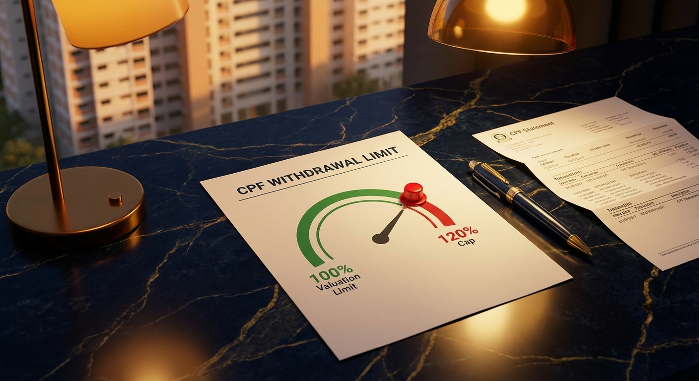

CPF Home Loan in Singapore: How to Use Your OA for Property (2026 Guide)
Your CPF Ordinary Account savings are not locked to HDB purchases. They can fund a significant portion of a private condo or landed property — down payment, monthly instalments, and stamp duty — but the rules carry important caveats that every private property buyer should understand before committing.
What You Can Use CPF OA For (Private Property)
When buying a private residential property — condominium, apartment, landed house — with a bank mortgage, your CPF Ordinary Account can be used for:
- Down payment: The 25% required down payment (for first property), of which the 5% minimum cash portion cannot come from CPF. The remaining 20% can be funded from OA.
- Monthly loan instalments: Your bank deducts loan repayments directly from your OA each month if you elect to do so, reducing cash outflow.
- Buyer’s Stamp Duty (BSD): CPF OA can be used to pay BSD on private property purchases, reducing the cash outlay at completion.
Note: Additional Buyer’s Stamp Duty (ABSD) cannot be paid from CPF. It must be settled in cash. For a Singapore Citizen purchasing a second property at S$2M, that is S$400,000 in cash — a planning consideration that must be factored alongside your TDSR-qualifying loan quantum before you commit to any property.
The Withdrawal Limit: Your CPF Ceiling for This Property
The most important number for private property CPF usage is the withdrawal limit of 120% of the lower of the property's purchase price or market valuation.

Once your total CPF withdrawals (principal plus accrued interest) reach 120% of the property's valuation, no further OA funds can be applied. This cap is property-specific and permanent.
For a S$1,500,000 private condo:
- 120% of S$1,500,000 = S$1,800,000 maximum lifetime CPF withdrawal for this property
- This includes both principal withdrawn and accrued interest at 2.5% p.a.
- Once reached, all subsequent loan instalments must be funded in cash
For higher-value properties — S$2M and above — this limit is usually not a binding constraint within a standard 25–30 year tenure. But for buyers using CPF aggressively early in the loan, particularly older buyers with shorter tenures, the cap can become relevant sooner than expected.
The Basic Retirement Sum Rule
Before your CPF OA savings can be used for private property beyond the initial purchase requirements, you must first have the Basic Retirement Sum (BRS) set aside in your CPF Special Account (SA) or Retirement Account (RA). As of 2026, the BRS is S$106,500.
Members Under 55
Must have the BRS of S$106,500 in your SA before CPF OA can be used beyond the accrued interest threshold. Most working professionals meet this through regular CPF contributions over time.
Members Aged 55 and Above
At 55, your SA and OA are merged into a Retirement Account. To continue using CPF for property, you must retain the Full Retirement Sum (FRS — S$213,000 in 2026) in your RA. Any OA above this can be used for property.
Enhanced Retirement Sum (ERS) Option
Members who pledge their property as collateral may be able to retain only half the BRS in cash, freeing more OA funds for property use. This pledge has implications at the point of eventual property sale.
Accrued Interest: The Hidden Cost of Using CPF
Every dollar withdrawn from CPF OA for your property accrues interest at 2.5% per annum — the same rate your OA would have earned had the money stayed in CPF. This accrued interest compounds annually and must be returned to CPF when you sell the property.
On S$300,000 CPF used over 25 years, accrued interest can exceed S$200,000. This is not a penalty — it is interest restored to your own retirement account — but it reduces your cash proceeds from the property sale.
This is not money lost — it goes back to your own CPF account — but it directly reduces the cash in hand you receive when you sell. For buyers who view property as a primary wealth-building vehicle, the accrued interest return means property appreciation must exceed CPF opportunity cost (2.5% p.a.) to generate real liquidity on exit.
Important: If the net sale proceeds are insufficient to return all CPF principal and accrued interest, you are not required to top up from other savings. Your CPF return is limited to the net proceeds from the sale. This protection is built into the CPF framework.
Private Property vs HDB: Key CPF Differences
- No CPF housing grants: Private properties do not qualify for the CPF Housing Grant, Enhanced CPF Housing Grant, or Proximity Housing Grant — those are exclusively for HDB flats
- No income ceiling: Unlike HDB, there is no income restriction on using CPF for private property
- Remaining lease rule: For private property, CPF withdrawals are allowed as long as the property lease covers the youngest buyer to age 95. Leasehold properties with short remaining leases may have reduced withdrawal limits
- Joint purchase flexibility: Couples can use their combined CPF OA balances for the same property, and choose which party's OA is drawn first
Structuring Your Purchase to Maximise CPF Efficiency
For buyers purchasing a private property as an upgrade — particularly those decoupling from an existing HDB flat — CPF planning is as important as mortgage planning. The sequencing of which party contributes CPF, when to stop CPF deductions and switch to cash, and how to retain retirement sum adequacy are all decisions worth examining before signing an Option to Purchase.
An independent mortgage broker can coordinate the CPF planning alongside the mortgage comparison — ensuring your loan structure, down payment source, and monthly instalment strategy are optimised together, not in isolation. Before your purchase, also review how TDSR and the MAS 4% stress test determine the maximum loan quantum you can qualify for, and when you eventually look to switch lenders, understand how CPF continuity is handled across a refinancing event.
Further Reading
- Best Home Loan Rates Singapore 2026 — current fixed and SORA-linked rate landscape; relevant when choosing how aggressively to use CPF for monthly instalments
- TDSR & the 4% Stress Test for Private Property Buyers — how your income, debts, and CPF OA usage interact to determine your qualifying loan amount
- Understanding the MAS 4% Stress Test (2026) — why the stress floor rate affects your loan qualification even when actual rates are far lower
- When to Refinance Your Private Property Loan — how CPF deductions continue seamlessly across a refinancing event and what changes at completion
- HDB vs Bank Loans: Which Is Right for You? — comparison of CPF OA rules for HDB flats versus private property bank loans
- CPF Board: Using Your CPF to Buy a Home — official CPF housing withdrawal rules, eligibility, and application process
- CPF Board: CPF Housing Withdrawal Limits — official 120% valuation limit rules, BRS requirements, and property pledge provisions
- IRAS: Additional Buyer’s Stamp Duty (ABSD) — official ABSD rates by buyer profile; ABSD cannot be paid from CPF OA
- IRAS: Buyer’s Stamp Duty (BSD) — BSD rates and payment; BSD can be paid from CPF OA
Your Mortgage Broker
Talk to Dan Ler — Nexus Mortgage SG
I help private property buyers optimise their CPF usage alongside their mortgage — from structuring down payment sources to comparing every available bank package. Free of charge: the bank pays the referral fee on disbursement.
WhatsApp Dan Now — Free CPF & Mortgage Review →Also explore the free Advanced Mortgage Calculator to model your monthly cash and CPF instalment split.
Nexus Mortgage SG is an independent mortgage advisory in Singapore. This article is for general informational purposes and does not constitute financial advice. CPF rules, withdrawal limits, and retirement sum amounts are subject to change. Figures are illustrative and based on conditions as of April 2026. For official CPF housing rules, visit CPF Board: Using Your CPF to Buy a Home. For ABSD rates, visit IRAS: ABSD.